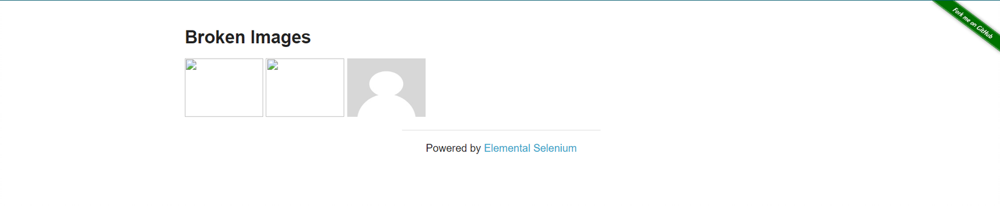

This test goal is to check the dimensions of broken images on the subpage.

Steps:
-
Open The Internet Main Page
-
Click Broken Image link and go to Broken Image subpage
-
Get the 3 images' dimensions and compare them with expected values
== Page Class
In this case, create an array of selectors to access images by index number:
public class BrokenImagePage extends BasePage {
private static final By[] selectorsImages = { By.cssSelector("div > img:nth-child(2)"),
By.cssSelector("div > img:nth-child(3)"),
By.cssSelector("div > img:nth-child(4)") };
@Override
public boolean isLoaded() {
getDriver().waitForPageLoaded();
return getDriver().getCurrentUrl()
.contains(PageSubURLsProjectYEnum.BROKEN_IMAGES.getValue());
}
@Override
public void load() {
BFLogger.logDebug("Load 'Broken Images' page.");
getDriver().get(GetEnvironmentParam.THE_INTERNET_MAIN_PAGE.getValue() +
PageSubURLsProjectYEnum.BROKEN_IMAGES.getValue());
getDriver().waitForPageLoaded();
}
@Override
public String pageTitle() {
return getActualPageTitle();
}
/**
* Returns an image height in pixels.
*
* @param imageIndex An index of given image.
* @return Height of an image in pixels.
*/
public int getImageHeight(int imageIndex) {
return getImageDimension(imageIndex).getHeight();
}
/**
* Returns an image width in pixels.
*
* @param imageIndex An index of given image.
* @return Width of an image in pixels.
*/
public int getImageWidth(int imageIndex) {
return getImageDimension(imageIndex).getWidth();
}
private Dimension getImageDimension(int imageIndex) {
return getDriver().findElementDynamic(selectorsImages[imageIndex])
.getSize();
}
}
== Test Class
Create @Test and @BeforeClass methods. Save expected images' dimensions in class fields:
@Category({ TestsSelenium.class, TestsChrome.class, TestsFirefox.class, TestsIE.class })
public class BrokenImagesTest extends TheInternetBaseTest {
private static BrokenImagePage brokenImagePage;
private final int expectedHeight = 90;
private final int expectedWidth = 120;
@BeforeClass
public static void setUpBeforeClass() {
brokenImagePage = shouldTheInternetPageBeOpened().clickBrokenImageLink();
logStep("Verify if Broken Image page is opened");
assertTrue("Unable to open Broken Image page", brokenImagePage.isLoaded());
}
@Test
public void shouldImageSizesBeEqualToExpected() {
for (int i = 0; i < 3; i++) {
logStep("Verify size of image with index: " + i);
assertEquals("Height of image with index: " + i + " is incorrect", expectedHeight,
brokenImagePage.getImageHeight(i));
assertEquals("Width of image with index: " + i + " is incorrect", expectedWidth,
brokenImagePage.getImageWidth(i));
}
}
}
The test will pass if every image had the correct width and height.